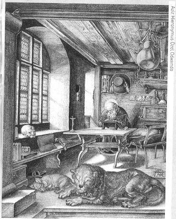

Girizgâh
SCHOPENHAUER, karamsar bir filozoftur. Dünyaya geldiği andan terk ettiği âna kadar hiçbir zaman geçim sıkıntısı çekmemiş, dara düşmemiş filozof, pek gariptir ama pesimisttir. Opus magnum (baş eseri) 'u olan Die Welt ah Wille und Vorstellung (İrâde ve Tasavvur Olarak Dünya)'unu tamamen pesimist bir dünya olarak inşa etmiştir. Peki, neden bu kadar be'dbindir filozof? Nietzsche, Musikînin Ruhundan Trajedinin Doğuşu adlı eserinde diyor ki, "o, her türlü ümitten mahrumdu, ama hakikati istiyordu." Scho-penhauer, hakikati dile getiriyordu ama dinleyen kim.
Benim felsefemdeki umutsuzluk ve melankoliden dola-feryat ediyorlar; bunun sebep-i hikmeti şurada yatmaktadır: zira ben, onların günahlarının bedeli olarak müstakbel bir cehennem efsaneleştirmek yerine, dünyada nerede bir günah varsa orada cehennemi bir şeylerin muhakkak olduğunu gösterdim.
Onun felsefî tefekküründe ve irâde metafiziğinde yaratıcı bir Tanrı yoktur. Bilakis kendi kendini yaratan ve tüketen obur bir İrâde vardır. Schopenhauer, korkusuz ve fütursuz bir ateisttir. Pek şaşırtıcı ve paradoks olsa da dört dörtlük bir mistiktir; lâkin hiçbir dine inanmaz. Ateisttir ama materyalist değildir. Peki, bu nasıl mümkündür? Schopenhauer'a göre bir ilâh olmaksızın da ilahî vecd hali mümkündür; bunun için illâ da bir Tanrıya gerek yoktur. Vecd halinde insan saf bilgiye ulaşır, eşyanın mahiyetini kavrar, onunla aynîleşir. Tabiî bu vecd hali mistik bir tecrübenin sonunda gerçekleşir. İrâde ya estetik büyülenme sonucunda veya uzlet halinde çile doldurmak suretiyle kendi hakikatine varır ve sonra kendini yok eder. Bundan sonra irâde yoktur, sadece âlemi temaşa eden bir göz vardır. Schopenhauer’in kanaatince insanın böyle bir mistik tecrübeyi edinebilmesi için bir Tanrıya yahut dinlere ihtiyaç yoktur. Bu konuda filozof ne kadar haklıdır, orası ayrı mesele.
İşte bu yüzden Schopenhauer, büyük azizlere, mistiklere ve ariflere karşı duyduğu sempatiyi, muhabbeti ve hayranlığı dinlerin hiçbirine göstermemiştir. Budizm'in Nirvana telakkisini, Hıristiyanlığın kadim günah anlayışını kendi felsefesine yakın bulsa da özü itibariyle bu dinlere karşı da menfî kanaattedir ve "bunu yeri geldikçe vurgulamaktadır. Aynı şekilde Kur'an ve İslam dini hakkında da toptan olumsuz bir tavır içindedir, hattâ ön yargılıdır. Ancak başta Mevlânâ olmak üzere İslâm safileri hakkında olumlu düşünür, onların düşünceleriyle kendi irâde felsefesinin mistik bakımdan örtüştüğünü îma eder. Gariptir ki filozof Allah'a ve beşerî irâdenin özgürlüğüne inanmaz, ama hayâllere, ruhun ölümsüzlüğüne, tenasühe (ruh göçü) inanır. Burada bariz bir şekilde Upanişad filozoflarının ve Budizmin tesiri vardır. Sözün özü teolojiyle yıldızı barışık değildir; tüm dinlere karşı münkir ve tavizsizdir. İflah olmaz bir ateisttir, amma kozmik düşünen bir mistiktir. Hiçbir dine inanmaz, ancak dinlerin faydalarını ve misyonlarını da inkâr etmez. Fikir namusunun gereği olarak hiçbir komplekse kapılmadan din hakkındaki özlü kanaatini şöyle dile getirir:
Hayatın içerisinden dinin, sanatın ve saf aşkın nadir anlarını çıkardığımız zaman, geriye bir dizi önemsiz düşünceden başka bir şey kalmaz.
Schopenhauer her konuda açık fikirliydi ve düşüncesini gevelemeden söylüyordu. Kendi felsefesini, "sabahın sislerinden sıyrılan güzel bir manzara" olarak görüyordu. Muarızlarının felsefesine ise, "duman ve karanlıklarda kaybolan" muğlâk ve muamma eserler gözüyle bakıyordu.
Yazılarında dehânın bütün pırıltıları mevcuttur; olağanüstü ve büyüleyici bir humorla yazar. Edebî sanatların hepsini bilir, yeri geldiğinde de kullanır; ancak asla ağdalı, abartmalı ve süslü püslü yazmaz. Yegâne endişesi anlaşılabilir olmaktır. Açıklık ve berraklık mizacıdır. Fikre hâkim olduğu kadar, cümleye de hâkimdir. Kafka, "Schopenhauer, bir dil sanatkârıdır. Tefekkürü buradan fışkırır. Sırf dilinden dolayı muhakkak surette okunmalıdır" derken haklıdır. Sözü etkileyicidir, yer yer gümbür gümbürdür; İsrafil'in sûru kadar güçlüdür. Buna rağmen yeri ve zamanı gelmedikçe konuşmayı istemez; hele boş konuşmayı hiç sevmez. Şu var ki konuştuğu zaman da bir bilgi çağlayanıdır. Malûmatfuruş değildir, lâkin çoğu konuda Ansiklopedistler'i çatlatacak kadar malûmat sahibidir. Fransız asıllı kont Alexandre Foucher de Careil, 1859 yılında kendisini ziyaret ettikten sonra görüşmeyi ve intibalarını şöyle kaleme alır:
Boş söz kavgalarından nefret ederdi; buna karşılık efsunlu, zeki ve ciddî sohbetleri takdir ve teşvik etmesini bilirdi. Dört lisânı aynı ustalık ve hakimiyetle konuşurdu: Fransızca, İngilizce, Almanca ve İtalyanca; İspanyolcayı ise olabildiğince. Konuştuğunda kaba Almancanın sağını solunu kendine has tarzıyla Latince, Yunanca, Fransızca, İngilizce ve İtalyanca parlak arabesklerle süslerdi. Konuşmalarındaki asalet ve canlılık, özlülük ve esprili hazırcevaplar, iktibas bolluğu ve teferruatlardaki itina sohbet esnasında saatlerin nasıl hızla akıp gittiğini hissettirmiyordu. Küçük dost çevresi bazen onu gece yarılarına kadar bir an olsun hiçbir yorgunluk belirtisi göstermeden dinliyordu ve onun bakışlarındaki canlılık bitmiyordu. Manidar sözleri dinleyenleri büyülüyordu; tasvir ederken aynı zamanda da yorum yapıyordu, incecik bir hassasiyet, tesirli konuşmasına refakat ediyordu; mevzubahis ettiği her şeyi aynı açıklık ve tanrılıkla inceliyordu. Bir Alman tabii bilimci olan ve sık sık derin göllerde araştırmalar yapan Eduard Rüppel, günlerden bir gün Schopenhauer’in çeşitli timsah türleri hakkında verdiği malûmatı ve timsahların alışkanlıkları hakkında verdiği eksiksiz bilgileri dinleyince ağzı açık kalmış ve sanki bir meslektaşını dinlediğini zannetmiştir. 1 8.Yüzyılın bu son sohbet adamını dinleme imkânına mazhar olanlara ne mutlu! Bu bakımdan o Voltaire ve Diderot, Helvetius ve Chamfort'un çağdaşıydı.
Schopenhauer’in bir tek kaygısı vardır, o da anlaşılmak. Bunun için olabildiğince anlaşılır yazar. Karamsar felsefesini humor dozajı çok iyi ayarlanmış ışıklı bir üslup aydınlatır. Sözü dosdoğru söyler, anlaşılacağını ümit eder. Çağının kendisini anlamamaktaki ısrarını, çağdaşlarının arrogant (mütekebbir, burnu havalarda) tavırlarını ve kendisini görmemezlikten gelmelerini Prometheus'un bir sözüyle yorumlar: "Bir insan çağdaşları tarafından değerlendirilemiyorsa bu, gelecek kuşaklara seslenmesindendir." Schopenhauer, hakikaten gelecek kuşaklara seslendiğine inanmaktadır; inanmakta ve bu iddiasına âdeta kendi karakter mührünü vurmaktadır. "Öyle bir zaman gelecektir ki", diyor filozof, "benim ne söylediğimi anlamayan kara cahil sayılacaktır."
Schopenhauer, felsefesinin bir deha ürünü olduğuna ve bir sanat eseri kadar etkili olacağına inanıyordu. Felsefeyi bir inanç alanı olarak değil, mutlak bir hürriyet alanı olarak seçmişti. Bunda son derece samimiydi ve şöyle diyordu: "Dindar olan hiç kimse felsefeye ulaşamaz, gerçekten felsefe yapan hiç kimse de dindar olamaz." "Bir zaman gelecek ki beni okuyanlar, tıpkı Teb kentinde olduğu üzere benim felsefemin de yüzlerce kapısı olduğunu göreceklerdir. Her tarafından bu kentin içine girilebilecek ve dosdoğru yüründüğü takdirde merkeze varılabilecektir." Hakikaten Schopenhauer’in felsefesi böyledir. Neresinden başlarsanız başlayın, hiç fark edemeyeceğiniz gizli bir kılavuz sizi muhakkak surette onun felsefesinin merkezine getirecektir. İster bilgi felsefesi, ister estetik isterse etik hakkındaki yazılarını okuyun varacağınız yegâne nokta tüm bu düşüncenin mihveri olan İRADE'dir. Peki, bu nasıl oluyor? Nasıl mümkün oluyor, bunu kendisinden dinleyelim:
Benim ellerim altında ve daha çok da zihnimde etikle metafiziğin bir arada olmak zorunda olduğu bir eser, bir felsefe büyümektedir. Şimdiye kadar, tıpkı yalan yere insanların ruh ve beden olarak ayrıldığı gibi, etikle metafizik de birbirinden ayrılıyordu. Anne rahminde çocuğun büyümesi gibi, eser günden güne ve ağır ağır büyüyor ve somutlaşıyor; neyin önce neyin sonra oluştuğunu bilmiyorum, tıpkı anne rahmindeki çocukta olduğu gibi. Bir organın, bir bölümün yahut bir damarın oluştuğunun farkına varıyor ve bunu yazıyorum; bütüne ne kadar uyup uymadığına aldırış etmeksizin: çünkü ben, hepsinin bir kaynaktan fışkırdığını biliyorum.
Ve bütün bunların hepsi mistik bir tecrübeyle taçlandırılmaktadır. Öyle ki mistik tecrübeyi bu felsefeden çıkardığınızda geriye kupkuru bir kavramlar iskeleti kalır.
Schopenhauer, tüm karamsarlığına, asabiliğine, görünüşteki soğukluğuna ve isyankârlığına rağmen sempatik, sevimli ve ciddi bir filozoftur. Ele aldığı konuyu mermeri yontar gibi işler. Felsefî bir konuyu bir masal, bir efsane anlatır gibi anlatır... Mecazlar, fıkralarla, adını duymadığınız şairlerden okuduğu şiirlerle süsler... Grek ve Latin yazarlardan iktibaslar (alıntılar) ile mevzua canlılık, akıcılık ve açıklık kazandırır; bazen coşar, coşturur, heyecanlandırır ve bir belagat velvelesiyle tüm mantık kalıplarını yıkar, aklınıza gelen argümanları unutturur.
Kahredici hayat mücadelesi onu bedbin bir hayat düşmanı yapmıştır. Ama o, ıstıraba teslim olmamış, bilâkis acıyı en büyük öğretici olarak kabullenmiş ve insana ilk etapta ürperti veren ve fakat sonra insan irâdesini esir alırcasına kavrayan, çekici, etkiletici ve hatta büyüleyici pesimist bir felsefe kurmuştur. Âlemi ve hayatı aklın değil, irâdenin, hatta kör bir irâdenin sürüklediğini savunan bu pesimist felsefe, başlangıçta pek itibar görmese de zaman geçtikçe bir cazibe merkezi haline gelmiştir. Schopenhauer’in Tasavvur ve İrade Olarak Dünya adlı eserini büyük bir alâka ile okuyan Goethe, filozofun kız kardeşi Adele'ye eseri över ve özellikle "büyük haz" duyduğu bölümleri gösterir. Daha sonra Adele, Schopenhauer'e gururla şu satırları yazacaktır: "En azından sen, Goethe'nin bu şekilde ciddiyetle okuduğu yegâne yazarsın."
Oysa daha 1820 yılında Berlin Üniversitesinde, hemen Hegel'in yanındaki bir mekânda bir avuç öğrenciye ders vermek istemiş, ancak hiç ilgi görmemiş; hiç ilgi gösteren olmadığı için de tası tarağı toplamak mecburiyetinde kalmıştı. Şimdi ise Jakop Bruckhardt, Richard Wagner, Fried-rich Nietzsche, Paul Deussen gibi Almanya'nın en seçkin düşünürleri hayranları arasındadır.3
3-"Dünya benden birçok şey öğrenmiştir", derken Schopenhauer pek iddialı görünse de, zaman onu haklı çıkarmıştır. Marcel Proust, Thomas Mann, Egon Friedell, Tolstoy, Sigmund Freud ve daha birçokları ondan etkilenmişlerdir.

Schopenhauer'ı önemli bir filozof yapan üç özellik vardır: gerçekçi, cesur ve gururlu olmak. O gerçekçi idi, çünkü bir düşünceyi sonuna kadar kovalıyordu; cesurdu, çünkü doğruluğuna inandığı fikre başkalarının ne diyeceğine, nasıl reaksiyon göstereceklerine hiç aldırış etmezdi; yalnızlık pahasına da olsa tefekkürünün rotasını başkalarına göre ayarlamazdı. Gururluydu; yalnızlığın ayazına karşı dişini sıkarak sonuna kadar dayandı, akademik çevrelerin kendisini görmemezlikten gelişini hiç önemsemedi. Akademik mahfillerde olup bitenlerden memnun değildi. Mizacı icabı mutsuzdu, ama mutlu bir hayata zaten inanmıyordu. Ona göre, "Mutlu bir hayat imkânsızdır; olsa olsa insanın ulaşabileceği en yüksek şey, kahramanca bir hayat sürdürmektir."
Albrecht Dürer (1471-1528)'in Hieonymus Evinde namında bakır üzerine bir gravürü vardır. Tabloda aziz Hyronymus, pencereden içeriye sızan güneş ışıklarının aydınlattığı özel mekânında çalışma masasında görünüyor. Güneşin girdiği pencerenin önünde ölümü sembolize eden bir kuru kafa durmaktadır. Aziz Hieronymus'un iki refakatçisi vardır: bir köpek ve bir de aslan. Her tarafta derin bir sessizlik hâkimdir. Bir ânın sonsuzluğu sezilmekte iken, köpek ve aslan ön tarafta uyumaktadırlar. Uyumaktadırlar uyumasına amma, uyanmaları da ân meselesidir. Eserin bütünündeki esrarengiz atmosfer aziz Hieronymus ile bu hayvanlar arasında var olan gizli aidiyeti âdeta ele vermektedir; bu öylesine bir yakınlıktır ki Hieronymus, neredeyse her ân bu hayvanların soluğunu hissetmektedir.
Ömrünü kitaplar arasında geçiren, okumaktan ve yazmaktan başka bir meşguliyeti olmayan Aziz Hieronymus, bu gravürde de masası başında tefekkür etmekte ve vecd ile âdeta iç âlemine akseden Idee'leri temaşaya dalmış görünmektedir. Birden muhayyilesinde bir fikir kıvılcımlanmış gibi öne doğru hareketlenmiş ve bir şeyler kaydediyor. Yazma işi bitince yine geri yaslanıp o âlemi lâhuta, o Idee'ler âlemine dalacaktır.
Diyeceksiniz ki, iyi de bu tabloyla Schopenhauer’in ne alâkası var? Ben bu tabloda Schopenhauer'i görür gibiyim. Evet, filozof gölgelerin pek kısaldığı bir vakitte Main nehrinin hemen kenarındaki evinde masası başına oturmuş kâh ateist kâh mistik düşünceler avlamaktadır. Bu esnada hırs, haz ve şehvet gibi her an kendisine refakat eden vahşî ve murdar duygular (köpek ve aslan) ön tarafta uyuklamaktadırlar.4 Ara sıra aklına gelen bazı düşüncelerin teheyyücüyle kalemine sarılmakta ve cihana meydan okumaktadır pesimist filozofumuz.
4-Hacı Bektaşi Veli'nin kucağındaki ceylan ve aslanın sebebi hikmeti de bu olsa gerek.
Aslında filozof, bu düşünceleri düşünmemektedir; bu fikirler kendiliğinden dimağına akın etmekte ve oradan kalemine doğru hareketlenmektedirler. O ise derin bir meditasyona dalmış intibaını vermektedir. Hiçbir şey için kendini zorlamamakta; tüm halis niyetlerinden ve bedbin düşüncelerinden sıyrılmış, her türlü arzu ve ihtirastan arınmıştır. İrâdesi öylesine narkotize edilmiş ki tamamen pasif bir "öz temaşa"ya kaptırmıştır kendini. Bu mekânda o, sadece bir varoluş rüyası görmektedir. Buradaki münzevi ânlarında zihni duru bir göl gibidir; bu gölün kenarındaki her varlık olduğu gibi aksteder "göl aynası"na; akseder ve esrarını açar açabildiği kadar. İşte Schopenhauer’in kaleminin yazdığı düşünceler, zekâ fırçasının çizdiği manzaralar bundan ibarettir. Aforizmaları böyle bir tefekkür meditasyonun-dan geriye kalan özlü düşüncelerdir.
Her düşünürün bir sosyal hayatı, bir de entelektüel hayatı vardır. Schopenhauer’in sosyal hayatında aktif bir insan değildir. O sosyal aktivitelerini âdeta zihnî faaliyete dönüştürmüş bir filozoftur. Entelektüel hayat onun için neredeyse zorunlu bir gaye ve gerçek bir hayat haline gelmiştir. Doğrusunu söylemek gerekirse Schopenhauer, gençlik yıllarından itibaren pratik hayatta başarısız olmuştur; bunun yegâne sebebi bizzat kendi huylan, kabiliyetleri ve temayülleridir. Onun bedbin ve asabi yapısı, pratik hayatında kendisi için aşılmayacak bir bariyer oluşturmuştur. Daha gençlik yıllarında annesiyle yaptığı bitmez tükenmez kavgaları, onun pratik hayata kapalılığını teyit eder mahiyettedir. Binaenaleyh annesinin kendisine yazdığı mektuplarında da onun "malûm asil kararsızlığından" bahsedilmektedir. Zaten Schopenhauer’in kendisi de sosyal hayat için yeterli karakter donanımına sahip olmadığını anlamış olacak ki dünyevî zamanını ve mesaisini tümden entelektüel faaliyetlere hasretmiştir. Bu karar vita aktiva'dan vita kontemplativa'ya bir sıçrayıştır. Schopenhauer’in aktif hayattan contemlativ (mistik temaşa) hayata geçişini insanlık için fevkalâde önemli buluyorum. Parerga adlı eserinde buyuruyor ki filozof: "İnsanlar, içe doğru faal olmadıklarından dolayı faaliyetlerini dışarıya yöneltme ihtiyacı duyarlar. Aksi varit olduğu takdirde pek münasebetsiz hatta çoğu kez istenmeyen yıkım ve engellerle karşılaşılır."
Demek oluyor ki Schopenhauer, hayatı kitaplardan okuyarak değil, bilakis kendi içindeki yokuşları çıkarak, egoizmini yıkarak ve âlemi özünden seyrederek öğrenmiştir. O, tıpkı bir örümcek gibi, tamamen kendinden, kendi iç âleminden imal ettiği Idee'ler5 ağına tutunmuş ve
5-Idee: ide, idea; fikir, düşünce, görüş demektir. Burada ve daha sonra hep Platon'un kullandığı anlamda Idea'nın Almanca karşılığı olan Idee kelimesini kullanmayı tercih ettik; çünkü çalışmada ağırlıklı olarak Alman literatüründen istifade edilmiştir. Ayrıca fikir, düşünce, görüş gibi kelimeler Idee'nin muhtevasını tam olarak vermemektedirler.
buradan yani kendi gerçeğinden hayatı seyretmiştir. Pek tabii filozofik değerli kitaplar da okumuştur; bu konuda da düstûr sahibidir. Şöyle ki o her mütefekkiri, her filozofu bizzat kendi kitaplarından okumuş ve hiçbir zaman başkalarının herhangi bir yazar hakkındaki yorumuna yani ikinci elden fikirlere itibar etmemiştir. Bunun için kendince haklı sebepleri vardır; kendisinden dinleyelim:
Yalnızca yazarların kendilerinden felsefî düşünceler alabiliriz; bu bakımdan, kendini felsefenin çektiğini duyanlar, filozofların ölümsüz sözlerini, onların eserlerinin durgun tapınağında aramalıdır.
Hayatında ne şehvetin iradeyi kül eden ateşine ne de şöhretin baştan çıkarıcı tuzaklarına teslim olmuştur. Şöhret peşinde koşanlara bunun bir budalalık olduğunu hatırlatmadan geçmez; "başkalarının kafalarının içi, insanın kendi gerçek mutluluğunun yuvası diye düşüneceği yer değildir."
Bir insanın, başka birine göre şu ya da bu oluşu, o kadar önemli değildir; sonunda her koyun kendi bacağından asılır ve önemli olan kendi bacağından asılacak kişidir. Kendimizden aldığımız mutluluk, çevremizden aldığımızdan daha büyüktür... İnsanın içinde yaşadığı dünya, genellikle ona baktığı biçimde kalıplanır... Bir insan için var olan ya da başına gelen her şey, yalnız bilincinde vardır ve yalnızca onun için yer almaktadır; insan için en temel olan şey, bilincinin yapısıdır... "Mutlu olmak, kişinin kendi kendine yetmesi demektir," diyen Aristo çok doğru söylemiş.
Şunu rahatlıkla söyleyebiliriz ki Schopenhauer’in tefekkürü doruk noktasına ulaştığında ufukta mistik bir gökkuşağı belirir ve bu tefekkürü çevreleyiverir. Hayatı hep fâniliğe mahkûm eden bu "menfi karakter", onun irâde metafiziğinin, etik ve estetiğinin hâkim tonu haline gelir. Hayatı ıstıraptan ibaret sayan bu felsefe, aslında "hayat kötüdür" demekle son sözünü söylemiş olmaz. Hiçlik, yokluk, fânilik her zaman bir son değildir. Ölüm, siyah veya beyaz renklere bürünebilir; Heidegger'in dediği gibi ölüm bazen bir kırılma, bir yıkılış, yok oluş olduğu gibi bazen de "varlık'ın aşikâr olması"nı (Gebirg des Se-ins), açığa çıkmasını, kurtuluşunu müjdeleyebilir. İyi bakılırsa hayatın köklerinin ölümün derinliklerinde olduğu kolayca görülecektir. O itibarla Schopenhauer’in pesimizminin üzerindeki maske kaldırıldığı zaman, 19. yüzyılın en derin mistik düşünürüyle karşılaşılacaktır. Schopenhauer; kadim Hint tefekkürünü, Ortaçağ mistisizmini, İslâm sufizmini ve Plotin'in negatif teolojisini cesaret ve maharetle yoğurmuş ve kendi dünya görüşü haline getirmeği başarmış bir filozoftur. Hattâ o bununla da kalmamış, bilakis Avrupa'daki hâkim düşünce sistemlerinin temsilcilerinin temel zaafını ifşa etmiştir. Asırlarca Avrupa'yı sürükleyen büyük filozoflar, bu düşünce tarzını, daha doğrusu bugün beşeriyetin ortak mirası haline gelen kadim tefekkür ve kültür mirasının ariflerini, filozoflarını ve mistiklerini acımasızca hiçe saymışlar, Schopenhauer’in tabiriyle "sahtekâr yahut kaçık" ilan etmişlerdir.
Sonuç olarak Avrupa'nın en seçkin düşünürleri ve filozofları, yeryüzünün "en eski ve nüfusça en yoğun" halklarına sırt çevirmekle kalmamışlar, aynı zamanda Avrupa'nın yüzyıllarca bu kadim düşünce mirasından habersiz yaşamasına sebep olmuşlardır. Oysa Schopenhauer; Her-der, Goethe, Schlegel, Paul Deussen gibi düşünürlerle birlikte Doğudaki tefekkür ışığını ilk keşfedenler arasındadır. Hayatın fâniliğini derin bir iç tecrübeyle kavrayan bu metafizik, Batıda 19. yüzyılda Schopenhauer gibi bir temsilcisini bulmuş oldu. Bu realite kültür ve felsefe tarihi açısından da son derece önemlidir.